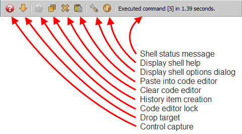

The status bar is located at the bottom of the shell view and consists of a toolbar and a status message area:
The purpose and use of the items on the status bar are as follows:
This toolbar icon is a toogle that controls how Command history items are created when a command is executed. Normally, each command executed creates a new Command history item containing the text of the command. This allows you to re-execute or re-edit any command previously executed by simply clicking or right-clicking the Command item in the shell history.
However, there may be times when this is not the behavior you want. Say you are interatively developing a new module in the shell and testing each change you make as you go. You may not want a long list of Command items, one for each version of the code you’ve tested, in the history list. In this case, by clicking this toolbar icon, you place the shell in update mode. Now each execution of your module simply updates its associated history Command item (if it already exists) with the current version of the code. In update mode you only have a single Command item in your history representing the most recently executed version of the code. You lose your development history, but gain a less cluttered history list. The choice is yours.
Clicking the icon again toggles the behavior back to its original create mode setting where new Command items are created each time the code is executed.
Note that if you are in update mode and execute a new command, a new Command item will still be created. Subsequent executions will update the new Command item as previously described. You create a new command by clicking the Clear code editor icon previously described. Besides clearing the code editor, it also signals the shell that you are starting a new command.
Note
You can use this behavior to your advantage when creating a variation of a module you are working on. If you have been editing and testing your module in update mode, you have only a single Command item in your history representing the latest version you’ve tested. Now say you have an idea for an interesting variant of the code you would like to try. You could save the current version in the code editor to a file, then start making your changes. But, alternatively, you can also click the Clear code editor icon followed by clicking the adjacent Paste into code editor icon and begin making your changes.
Clicking the Clear code editor icon copies your current code version to the system clipboard, clears the code editor, and signals to the shell that you are starting a new command. Clicking the Paste into code editor icon pastes your original code back into the code editor. Now, when you start making changes and testing them, the shell creates a new Command item, since you are working on a new command. Subsequent executions update the new Command item. Consequently, you end up with two versions of your code in the history list: the original and the new variant. This can be very handy, since you can test either version simply by clicking on its Command item in the history list.
If you later decide you want to resume work on the original version, simply right-click its Command item. This replaces the code editor contents with the contents of the original Command item. Also note that subsequent edits and executions update the original Command item since right-clicking its Command item reassociated the item with the code editor.
You can use this technique to create any number of active versions of your code before finally deciding to save one (or more) of them to a file permanently.
Clicking this toolbar icon toggles the code editor clearing behavior of the shell. As explained earlier, the shell normally clears the contents of the code editor each time you successfully execute a command. Clicking this icon toggles this behavior so that the code editor buffer is never automatically cleared. Clicking it again toggles it back to its original auto-clear behavior.
The automatic clearing behavior of the editor is usually best suited to situations when you are doing a lot of experimenting with different commands or expressions. However, if you are doing heavier code development, such as creating a new module from scratch in the shell, you probably want the code editor contents left unchanged after each test cycle. In this case, click this icon to toggle the auto-clear behavior of the code editor off. This mode also works well in conjunction with the History item creation icon’s update mode previously described, since it can prevent cluttering up you history list with too many versions of the code you are developing.
To use this tool, drag any mouse draggable object or item and drop it on the toolbar icon. The shell will add an item appropriate for the dropped object to the history list.
Note that this tool can be used both with draggable items within your application as well as external items, such as files dragged from one of your operating system’s file system explorer or finder windows.
This toolbar icon allows you quickly get access to the models, controls, editors and values displayed in your application’s user interface. To use it, place the mouse pointer over the icon, then click, drag and release the mouse pointer over one of the controls in your user interface. Depending upon your current shell option settings, the shell will add zero, one or more Result history items for the following values:
Which values are displayed in the history list depend upon which items are enabled in the Control Grabber section on the Debug page of the shell options dialog. Refer to the Shell Options section for more information.
Using this tool can be useful for getting a quick peek at what is happening in your application. Once the tool provides you with access to some of your key application objects, you can use the full power of the shell to probe their current state and behavior.
One good way to use the tool is in conjunction with the FACETS_DEV environment variable and the DockWindow context menu’s Display>VIP Shell action as follows: